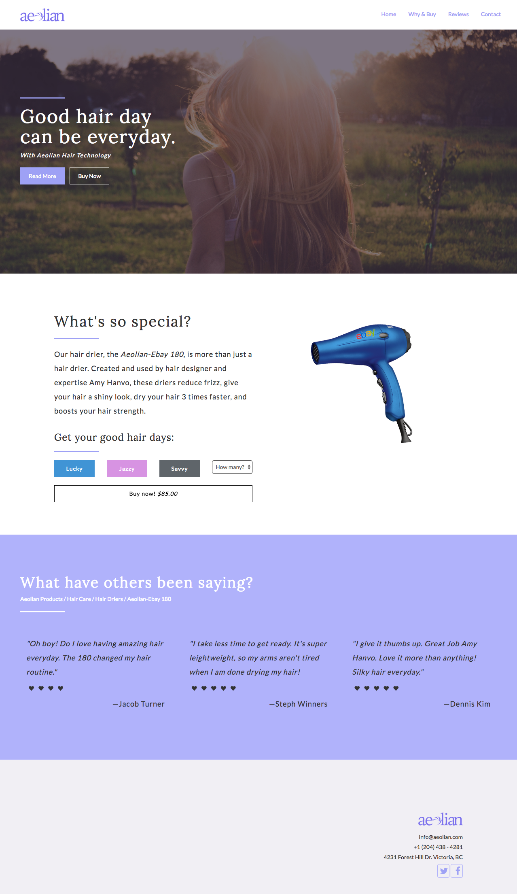

A fake website
I was applying for a co-op and the company wanted me to complete a task for them. The task was: "hey make a website for a (apparently luxurious) hairdryder for us!" It was pretty fun actually and I stayed up till 4 in the morning working on it (is it hairdryer or hairdrier?). If the design seems familiar, it is probably because I based it off the Purpose Social website. Shh- don't tell.
The git repo.
